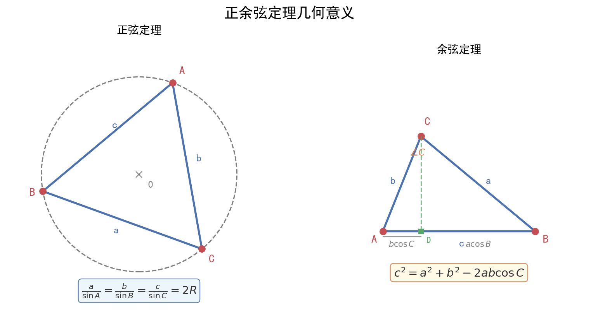

核心内容
本质理解：解三角形就是"知三求其他"——已知三角形的某些边和角，利用正弦定理、余弦定理、面积公式求未知量。核心是边角互化和方程思想。
一、三大定理公式体系
1. 正弦定理（"边化角"首选）
$$\frac{a}{\sin A} = \frac{b}{\sin B} = \frac{c}{\sin C} = 2R$$
其中$R$为$\triangle ABC$外接圆半径。
变形公式：
- $a = 2R\sin A$, $b = 2R\sin B$, $c = 2R\sin C$（边化角）
- $\sin A = \frac{a}{2R}$, $\sin B = \frac{b}{2R}$, $\sin C = \frac{c}{2R}$（角化边）
- $a : b : c = \sin A : \sin B : \sin C$
适用场景：已知两角一边、两边一对角、求外接圆半径。
2. 余弦定理（"角化边"首选，含平方关系）
$$a^2 = b^2 + c^2 - 2bc\cos A$$ $$b^2 = a^2 + c^2 - 2ac\cos B$$ $$c^2 = a^2 + b^2 - 2ab\cos C$$
求角公式： $$\cos A = \frac{b^2 + c^2 - a^2}{2bc}$$
适用场景：已知三边、两边夹一角、两边一对角（求第三边）。
3. 面积公式（多版本，灵活选择）
$$S = \frac{1}{2}ab\sin C = \frac{1}{2}bc\sin A = \frac{1}{2}ca\sin B$$
$$S = \frac{1}{2}ah_a = \frac{1}{2}bh_b = \frac{1}{2}ch_c$$（底×高）
$$S = \frac{abc}{4R}$$（与外接圆半径关系）
$$S = \frac{1}{2}(a+b+c)r$$（与内切圆半径关系，$r$为内切圆半径）
海伦公式：$S = \sqrt{p(p-a)(p-b)(p-c)}$，其中$p = \frac{a+b+c}{2}$（三边已知时用）。
二、解题通法：已知条件 → 选择定理 → 求解目标
条件-定理匹配表
| 已知条件 | 选用定理 | 可求量 | 注意点 |
|---|---|---|---|
| 两角一边（AAS/ASA） | 正弦定理 | 所有边和角 | 先用内角和求第三角 |
| 两边夹一角（SAS） | 余弦定理求第三边 → 正弦定理求角 | 所有边和角 | 先用余弦定理 |
| 三边（SSS） | 余弦定理求角 | 所有角 | 可能有多解，需判断 |
| 两边一对角（SSA） | 正弦定理或余弦定理 | 需讨论 | 高频陷阱！可能多解 |
详细解题流程（SSA多解讨论）
已知：$a$, $b$, $A$（两边及其中一边的对角）
步骤：
- 用正弦定理：$\sin B = \frac{b\sin A}{a}$
- 判断$\sin B$的值：
- 若$\sin B > 1$：无解（不存在这样的三角形）
- 若$\sin B = 1$：一解，$B = 90°$
- 若$0 < \sin B < 1$：可能两解（$B$为锐角或钝角）
- 当$a > b$时：$A > B$，$B$只能为锐角，一解
- 当$a = b$时：$A = B$，一解（等腰三角形）
- 当$a < b$时：$B$可能为锐角或钝角，两解（需验证$A+B < 180°$）
口诀："大边对大角，小边对小角；sinB大于1无解，等于1唯一，小于1看大小"
三、高频题型与通法
题型1：求面积/周长最值（广东卷解答题第2问核心！）
已知：一角（如$A$）及对边（如$a$） 目标：求面积$S$或周长$L = a+b+c$的最大值
通法1：余弦定理+基本不等式
- 由$a^2 = b^2 + c^2 - 2bc\cos A$，结合$b^2 + c^2 \geq 2bc$
- 得$bc \leq \frac{a^2}{2(1-\cos A)}$（当$b=c$时取等）
- $S = \frac{1}{2}bc\sin A \leq \frac{a^2\sin A}{4(1-\cos A)}$
通法2：正弦定理+三角函数有界性
- $a = 2R\sin A$ → $R = \frac{a}{2\sin A}$（定值）
- $b = 2R\sin B$, $c = 2R\sin C = 2R\sin(A+B)$
- $S = \frac{1}{2}bc\sin A = 2R^2\sin A\sin B\sin(A+B)$
- 用三角恒等变换求最值
广东卷特色：广州名校联考常在第2问考查面积最值，要求用两种方法之一。基本不等式法更简洁，三角函数法更通用。
题型2：三角形形状判定
方法：将条件统一化为边或统一化为角
| 条件特征 | 转化方向 | 判定结果 |
|---|---|---|
| 含$a^2 + b^2$与$c^2$比较 | 统一为边（余弦定理） | $a^2+b^2>c^2$ → 锐角；$=c^2$ → 直角；$ |
| 含$\sin A$, $\sin B$, $\sin C$关系 | 统一为角（正弦定理） | 利用三角恒等变换 |
| 含$\cos A$, $\cos B$, $\cos C$ | 直接判断角 | $\cos A > 0$ → $A$为锐角 |
典型结论：
- 若$\sin 2A = \sin 2B$，则$A = B$（等腰）或$A + B = 90°$（直角）
- 若$a\cos A = b\cos B$，则$A = B$（等腰）或$A + B = 90°$（直角）
题型3：多三角形问题（连解题）
特征：图中多个三角形共享边或角 通法：
- 在$\triangle ABD$中用正弦/余弦定理求某量
- 在$\triangle BCD$中利用上一步结果继续求解
- 逐步递推，注意公共边和公共角的关系
四、向量法辅助解三角形
1. 中线向量公式
$\vec{AD} = \frac{1}{2}(\vec{AB} + \vec{AC})$（$D$为$BC$中点）
推论：$AD^2 = \frac{1}{4}(AB^2 + AC^2 + 2\vec{AB} \cdot \vec{AC}) = \frac{1}{4}(b^2 + c^2 + 2bc\cos A)$
中线长公式：$m_a = \frac{1}{2}\sqrt{2b^2 + 2c^2 - a^2}$
2. 角平分线向量公式
$\vec{AD} = \frac{b\vec{AB} + c\vec{AC}}{b+c}$（$D$在$BC$上，$AD$平分$\angle A$）
3. 面积向量公式
$S = \frac{1}{2}|\vec{AB} \times \vec{AC}| = \frac{1}{2}|x_1y_2 - x_2y_1|$（坐标法）
五、记忆口诀
正余弦定理口诀：
- "两角一边用正弦，两边夹角用余弦"
- "三边求角余弦好，边角互化正弦妙"
- "SSA多解要小心，大边对大角来判"
- "面积公式有多种，两边夹角最常用"
- "求最值用不等式，或化三角有界性"
关联卡片
- 高一筑基_数学_核心知识网络_平面向量体系 — 向量法辅助解三角形（中线、角平分线、面积）
- 高一筑基_数学_易错警示与辨析_平面向量与解三角形常见陷阱 — SSA多解、角的范围、内角和约束等易错点
- 高一筑基_数学_核心知识网络_空间几何体表面积与体积 — 解三角形与立体几何的衔接（如三棱锥的高计算）
备注
- 广东高一下期末命题规律：解答题第18题固定为解三角形，12-14分，三问结构。第1问基础（5-6分），第2问中档（4-6分），第3问（名校联考）拔高（2-4分）。广州名校联考（五校、三校）第3问常考查多解讨论或最值问题。
- 2024-2025学年广州越秀区期末第18题：第1问正弦定理求角；第2问余弦定理+面积公式；第3问面积最值（用基本不等式）。这是广东卷"层层递进"的典型结构。
- 书写规范：写正弦定理时必须写$\frac{a}{\sin A} = \frac{b}{\sin B} = \frac{c}{\sin C} = 2R$的完整形式，不能只写比例式。
- 训练建议：先练基础"知三求其他"（15题），再练面积/周长最值（10题），最后练多解讨论（5题）。
- 高考衔接：新高考Ⅰ卷中解三角形是解答题第15-16题的常客（10-12分），高一下打好基础，高二深化最值与范围问题。
🏷️ 标签：
#数学#典型题型与方法#高一筑基#难度3#解三角形#正弦定理#余弦定理#面积公式#SSA多解#最值#基本不等式#广东名校模拟